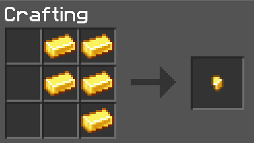
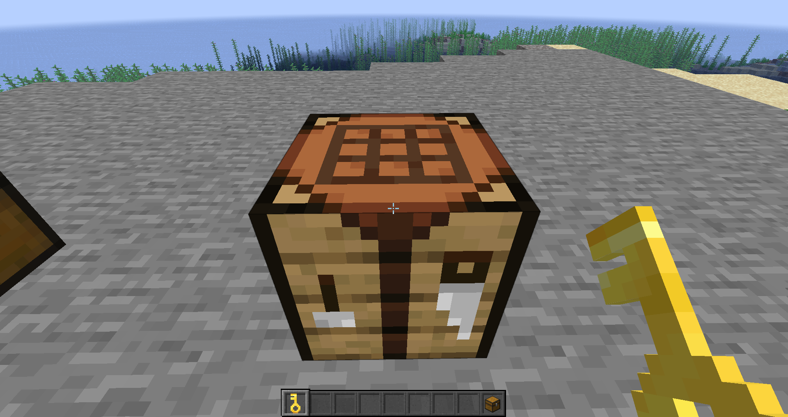
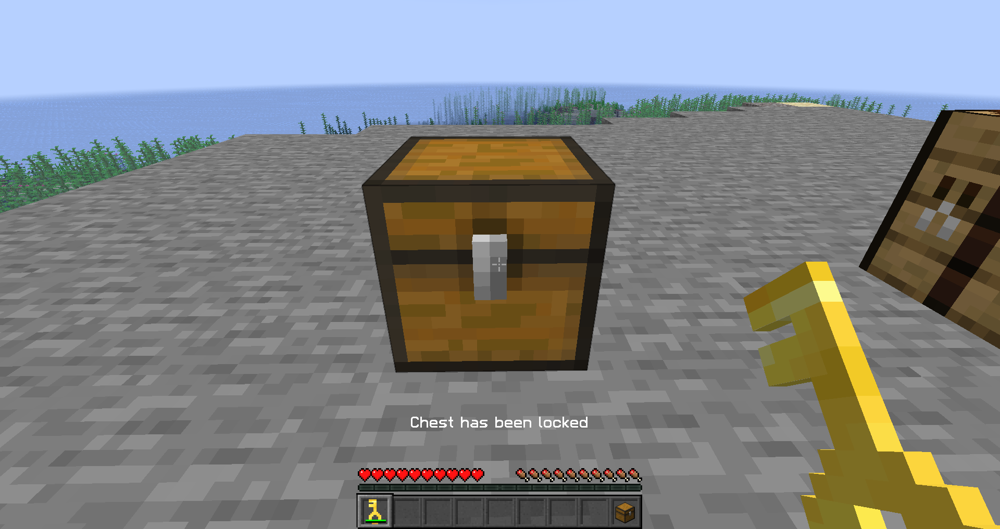
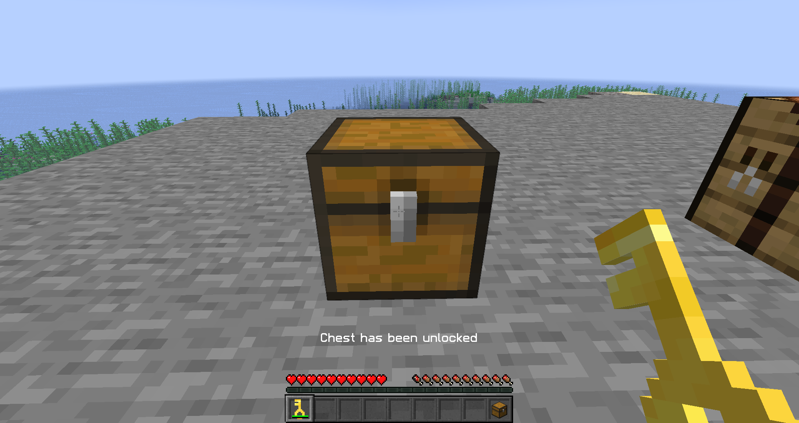
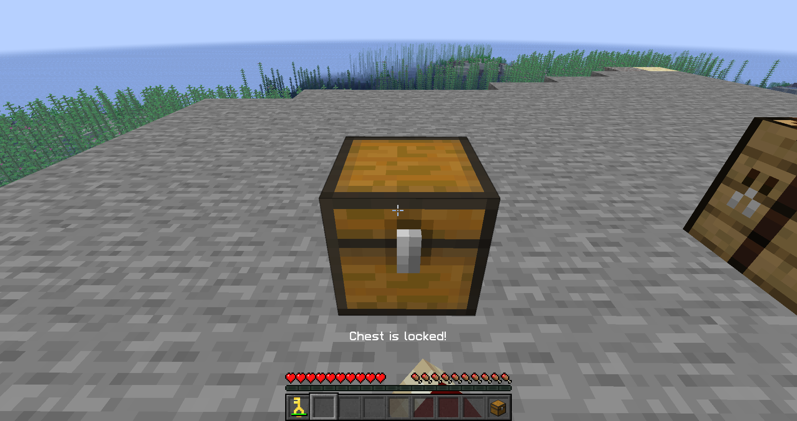

Du kannst auf unseren Server, um deine Items zu schützen, deine eigene Kisten verschließen.
Um einen Key für eine Kiste zu craften benötigst du insgesamt 5 Gold.
Diese legst du wie im Bild unten gezeigt rein und es erscheint ein Goldnugget.
Wenn du den Goldnugget aus dem Crafttable nimmst, wird der Goldnugget in einen Key umgewandelt.
Nachdem du einen Key gecraftet hast, kannst du jetzt mit Shift-Rechtsklick auf eine Kiste, diese abschließen oder aufschließen.
Es erscheint über deiner Lebensanzeige eine kleine Nachricht, ob die Kiste abgeschlossen oder aufgeschlossen wurde.
 Wenn die Kiste geschlossen wurde, kann diese auch nicht mehr geöffnet werden. Die Kiste kann auch nicht abgebaut werden, sobald Ihr die Kiste wieder aufschließt, könnt Ihr sie wieder öffnen und abbauen.
